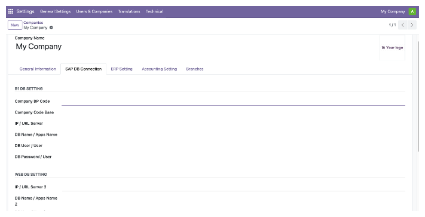

<section class="oe_container">
    <div class="oe_row oe_spaced">
        <h2 class="oe_slogan" style="color:#875A7B;">Manage multi-company settings and UDF company configuration</h2>
        <h3 class="oe_slogan"> This module helps manage company master data and multi-company setup in Odoo.</h3>
        <div class="oe_demo oe_picture or_screenshot">
            
        </div>
    </div>
</section>
    